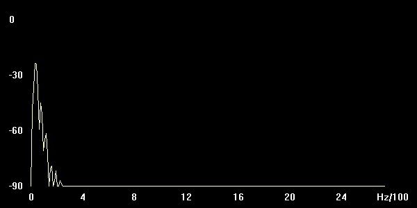

Dreieck
| Obertöne | Ampl. Db | Hz |
| 1 | -9 | 38 |
| 2 | -47 | 118 |
| 3 | -75 | 199 |
Sägezahn
| Obertöne | Ampl. Db | Hz |
| 1 | -20 | 32 |
| 2 | -54 | 113 |
| 3 | -77 | 194 |
Quadrat
| Obertöne | Ampl. Db | Hz |
| 1 | -16 | 32 |
| 2 | -42 | 118 |
| 3 | -59 | 194 |
Quadrat 10-90

| Obertöne | Ampl. Db | Hz |
| 1 | -16 | 43 |
| 2 | -46 | 118 |
| 3 | -84 | 307 |
Quadrat 30-70

| Obertöne | Ampl. Db | Hz |
| 1 | -8 | 38 |
| 2 | -48 | 118 |
| 3 | -84 | 310 |
Quadrat 50-50

| Obertöne | Ampl. Db | Hz |
| 1 | -16 | 32 |
| 2 | -42 | 118 |
| 3 | -59 | 194 |
Setup VCV Rack:
Disonanzfall
Amplitudenmodulation_Line
Wir haben versucht den Klang eines Metronoms nachzubilden.
1. VCO Frequenz: 400H p width: 50 Fine: 50 cent
2. VCO Frequenz: 370 Hz p width: 52 Fine: 100 cent
ADSR att: 1ms dec: 1ms sustain: 0% rel: 1m
VCF Frequenz: 710,64 Resonanz: 56,145% Drive: 197,35%